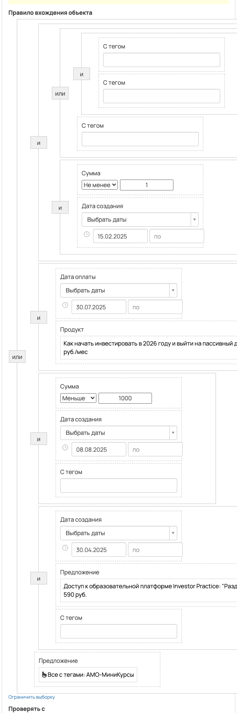
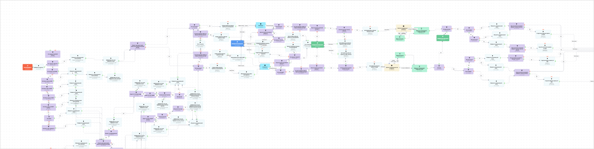

[АМО] Миникурсы + Автовеб КФИ
- ID процесса:
1981108 - Объект: Заказы
- Статус: Ожидание событий
- Внутренняя страница: 1981108. [АМО] Миникурсы + Автовеб КФИ
- GetCourse: Карточка | Схема процесса
Скриншоты процесса


Коротко для заказчика
- Главное: В процесс попадают заказы по всем предложениям с тегом «AMO-МиниКурсы».
- Дальше он передает данные как: Оплаты и заказы.
- Связанных баз Vakas: 3.
Понятное описание процесса
- Процесс работает с объектом GetCourse: Заказы. Текущий статус процесса: Ожидание событий.
- На вход попадают данные так: В процесс попадают заказы по всем предложениям с тегом «AMO-МиниКурсы».
- Техническое правило входа в GetCourse: С тегом (ID: 1438562) и С тегом (ID: 1640675) или С тегом (ID: 1624900) и Сумма и Дата создания (дата: 15.02.2025 - ...) или Дата оплаты (дата: 30.07.2025 - ...) и Продукт (ID: 3479918) или Сумма и Дата создания (дата: 08.08.2025 - ...) и С тегом (ID: 1850926) или Дата создания (дата: 30.04.2025 - ...) и Предложение (ID: 6174702) и С тегом (ID: 1640675) или Предложение (все с тегами: AMO-МиниКурсы).
- Внутри схемы есть дополнительные проверки/ожидания: 51. Основные блоки: «Это Мини-курс за 590?»; «Это Мини-курс за 990?»; «Это Мини-курс за 1590?»; «Клиент уже имеет такой заказ за последние 30 дней?»; «Это КФИ?»; «Оплатил?».
- Дальше процесс делает прямые вызовы Vakas: 5. Напрямую задействованы базы: 71666, 71488, 71667.
- Передача: 71666. Миникурсы + Автовеб КФИ: Оплаты и заказы. Передаются параметры:
number,id,order_id,positions,costMoney,leftCostMoney,payedMoney,status,paymentLink,firstNameи другие. - Передача: 71488. Миникурсы + Автовеб КФИ: Оплаты и заказы. Передаются параметры:
number,id,order_id,positions,costMoney,leftCostMoney,payedMoney,status,paymentLink,firstNameи другие. - Передача: 71666. Миникурсы + Автовеб КФИ: Оплаты и заказы. Передаются параметры:
number,id,order_id,positions,costMoney,leftCostMoney,payedMoney,status,paymentLink,firstNameи другие. - Передача: 71488. Миникурсы + Автовеб КФИ: Оплаты и заказы. Передаются параметры:
number,id,order_id,positions,costMoney,leftCostMoney,payedMoney,status,paymentLink,firstNameи другие. - Передача: 71667. База 71667: Оплаты и заказы. Передаются параметры:
number,id,order_id,positions,costMoney,leftCostMoney,payedMoney,status,paymentLink,firstNameи другие. - Что происходит в amoCRM: На входе в этап ЛИДОРУБЫ -> Новая заявка [73992646] база ищет дубль и может взять старую сделку только из заранее разрешенных этапов. На входе в этап ЛИДОРУБЫ -> Новая заявка [73992646] база ищет дубль и, если находит его, обновляет сделку без смены этапа.
Ход процесса в GetCourse
- Схема состоит из 169 блоков и 260 переходов.
- По типам: стартов 1, условий/ожиданий 51, вызовов URL 5, изменений полей 6, финалов 4.
Блоки процесса: что делают и зачем нужны:
- Блок
34507351«Начало работы» (старт). Что делает: Запускает выполнение схемы для объекта, который попал под правило входа процесса. Зачем нужен: Нужен как точка входа: от него GetCourse начинает движение объекта по схеме. Дальше: если результат «Выполнено», идет в «Добавить в группу». - Блок
34576417«Добавить в группу» (операция). Что делает: Выполняет служебный шаг схемы «Добавить в группу». Зачем нужен: Нужен как промежуточный технический шаг в схеме «Добавить в группу». Дальше: если результат «Выполнено», идет в «Это продукт 4244131?». - Блок
40979663«Это продукт 4244131?» (условие). Что делает: Проверяет ветвление «Это продукт 4244131?», но текст условия в дампе не расшифрован. Зачем нужен: Нужен, чтобы разделить поток: подходящих пользователей/заказы отправить дальше, неподходящих перевести на другую ветку или завершить. Дальше: если результат «Нет», идет в «Это продукт 3479918?»; если результат «Да», идет в «Изменить значение доп. поля (копия)». - Блок
41252302«Изменить значение доп. поля (копия)» (операция). Что делает: Выполняет служебный шаг схемы «Изменить значение доп. поля (копия)». Зачем нужен: Нужен как промежуточный технический шаг в схеме «Изменить значение доп. поля (копия)». Дальше: если результат «Выполнено», идет в «Добавляем тег для передачи в амо». - Блок
40979666«Добавляем тег для передачи в амо» (операция). Что делает: Выполняет служебный шаг схемы «Добавляем тег для передачи в амо». Зачем нужен: Нужен как промежуточный технический шаг в схеме «Добавляем тег для передачи в амо». Дальше: если результат «Выполнено», идет в «Клиент уже имеет такой заказ за последние 30 дней? (копия)». - Блок
40428349«Клиент уже имеет такой заказ за последние 30 дней? (копия)» (условие). Что делает: Проверяет ветвление «Клиент уже имеет такой заказ за последние 30 дней? (копия)», но текст условия в дампе не расшифрован. Зачем нужен: Нужен, чтобы разделить поток: подходящих пользователей/заказы отправить дальше, неподходящих перевести на другую ветку или завершить. Дальше: если результат «Нет», идет в «Это миникурс?»; если результат «Да», идет в «Это миникурс?». - Блок
34566206«Это миникурс?» (условие). Что делает: Проверяет ветвление «Это миникурс?», но текст условия в дампе не расшифрован. Зачем нужен: Нужен, чтобы разделить поток: подходящих пользователей/заказы отправить дальше, неподходящих перевести на другую ветку или завершить. Дальше: если результат «Нет», идет в «Это Автомарафон КФИ или ПД или полное участие?»; если результат «Да», идет в «Новая заявка не обновл сделку по миникурсам». - Блок
34565682«Новая заявка не обновл сделку по миникурсам» (вызов URL). Что делает: Передает в Vakas: 71666. Миникурсы + Автовеб КФИ, канал «Оплаты и заказы» (GET); параметры:number,id,order_id,positions,costMoney,leftCostMoney,payedMoney,status,paymentLink,firstName,lastName,name,email,phoneи другие; timeout 300 сек. Зачем нужен: Нужен, чтобы передать подходящий объект в 71666. Миникурсы + Автовеб КФИ; дальше На входе в этап ЛИДОРУБЫ -> Новая заявка [73992646] база ищет дубль и, если находит его, обновляет сделку без смены этапа. Дальше: если результат «Ошибка», идет в «n8n fail после Новая заявка не обновл сделку по миникурсам #34565682»; если результат «Выполнено», идет в «n8n success после Новая заявка не обновл сделку по миникурсам #34565682». - Блок
43523749«n8n success после Новая заявка не обновл сделку по миникурсам #34565682» (операция). Что делает: Выполняет служебный шаг схемы «n8n success после Новая заявка не обновл сделку по миникурсам #34565682». Зачем нужен: Нужен как промежуточный технический шаг в схеме «n8n success после Новая заявка не обновл сделку по миникурсам #34565682». Дальше: если результат «Ошибка», идет в «error_vakas 0»; если результат «Выполнено», идет в «error_vakas 0». - Блок
43431930«error_vakas 0» (операция). Что делает: Выполняет служебный шаг схемы «error_vakas 0». Зачем нужен: Нужен как промежуточный технический шаг в схеме «error_vakas 0». Дальше: если результат «Выполнено», идет в «Оплатил?». - Блок
34565872«Оплатил?» (ожидание условия). Что делает: Останавливает объект в ожидании нужного условия; точная формула в дампе не расшифрована. Зачем нужен: Нужен, чтобы не отправлять объект раньше времени: процесс ждет нужное событие, заказ, сегмент или другое условие. Дальше: если результат «Время истекло», идет в «Завершение процесса»; если результат «Условие выполнено», идет в «Это миникурс?». - Блок
34566059«Завершение процесса» (завершение). Что делает: Завершает ветку процесса после выполненных проверок и действий. Зачем нужен: Нужен, чтобы закрыть текущую ветку и не гонять объект по процессу повторно. Дальше переходов нет: это конечная точка ветки. - Блок
34566000«Это миникурс?» (условие). Что делает: Проверяет ветвление «Это миникурс?», но текст условия в дампе не расшифрован. Зачем нужен: Нужен, чтобы разделить поток: подходящих пользователей/заказы отправить дальше, неподходящих перевести на другую ветку или завершить. Дальше: если результат «Нет», идет в «Это Автомарафон КФИ или ПД или полное участие?»; если результат «Да», идет в «Еще не оплатил основной продукт?». - Блок
34576455«Еще не оплатил основной продукт?» (условие). Что делает: Проверяет ветвление «Еще не оплатил основной продукт?», но текст условия в дампе не расшифрован. Зачем нужен: Нужен, чтобы разделить поток: подходящих пользователей/заказы отправить дальше, неподходящих перевести на другую ветку или завершить. Дальше: если результат «Нет», идет в «Завершение процесса»; если результат «Да», идет в «Это продукт 4244131?». - Блок
40979688«Это продукт 4244131?» (условие). Что делает: Проверяет ветвление «Это продукт 4244131?», но текст условия в дампе не расшифрован. Зачем нужен: Нужен, чтобы разделить поток: подходящих пользователей/заказы отправить дальше, неподходящих перевести на другую ветку или завершить. Дальше: если результат «Нет», идет в «2 группа не обновл сделку по миникурсам»; если результат «Да», идет в «Запуск ПД не обновл сделку по миникурсам». - Блок
40979685«Запуск ПД не обновл сделку по миникурсам» (операция). Что делает: Выполняет служебный шаг схемы «Запуск ПД не обновл сделку по миникурсам». Зачем нужен: Нужен как промежуточный технический шаг в схеме «Запуск ПД не обновл сделку по миникурсам». Дальше: если результат «Ошибка», идет в «n8n fail после Запуск ПД не обновл сделку по миникурсам #40979685»; если результат «Выполнено», идет в «n8n success после Запуск ПД не обновл сделку по миникурсам #40979685». - Блок
43523779«n8n success после Запуск ПД не обновл сделку по миникурсам #40979685» (операция). Что делает: Выполняет служебный шаг схемы «n8n success после Запуск ПД не обновл сделку по миникурсам #40979685». Зачем нужен: Нужен как промежуточный технический шаг в схеме «n8n success после Запуск ПД не обновл сделку по миникурсам #40979685». Дальше: если результат «Ошибка», идет в «error_vakas 0»; если результат «Выполнено», идет в «error_vakas 0». - Блок
43431976«error_vakas 0» (операция). Что делает: Выполняет служебный шаг схемы «error_vakas 0». Зачем нужен: Нужен как промежуточный технический шаг в схеме «error_vakas 0». Дальше: если результат «Выполнено», идет в «Завершение процесса». - Блок
43523780«n8n fail после Запуск ПД не обновл сделку по миникурсам #40979685» (операция). Что делает: Выполняет служебный шаг схемы «n8n fail после Запуск ПД не обновл сделку по миникурсам #40979685». Зачем нужен: Нужен как промежуточный технический шаг в схеме «n8n fail после Запуск ПД не обновл сделку по миникурсам #40979685». Дальше: если результат «Ошибка», идет в «Это продукт 4244131?»; если результат «Выполнено», идет в «Это продукт 4244131?». - Блок
34566021«2 группа не обновл сделку по миникурсам» (вызов URL). Что делает: Передает в Vakas: 71666. Миникурсы + Автовеб КФИ, канал «Оплаты и заказы» (GET); параметры:number,id,order_id,positions,costMoney,leftCostMoney,payedMoney,status,paymentLink,firstName,lastName,name,email,phoneи другие; timeout 300 сек. Зачем нужен: Нужен, чтобы передать подходящий объект в 71666. Миникурсы + Автовеб КФИ; дальше На входе в этап ЛИДОРУБЫ -> Новая заявка [73992646] база ищет дубль и, если находит его, обновляет сделку без смены этапа. Дальше: если результат «Ошибка», идет в «n8n fail после 2 группа не обновл сделку по миникурсам #34566021»; если результат «Выполнено», идет в «n8n success после 2 группа не обновл сделку по миникурсам #34566021». - Блок
43523753«n8n success после 2 группа не обновл сделку по миникурсам #34566021» (операция). Что делает: Выполняет служебный шаг схемы «n8n success после 2 группа не обновл сделку по миникурсам #34566021». Зачем нужен: Нужен как промежуточный технический шаг в схеме «n8n success после 2 группа не обновл сделку по миникурсам #34566021». Дальше: если результат «Ошибка», идет в «error_vakas 0»; если результат «Выполнено», идет в «error_vakas 0». - Блок
43523754«n8n fail после 2 группа не обновл сделку по миникурсам #34566021» (операция). Что делает: Выполняет служебный шаг схемы «n8n fail после 2 группа не обновл сделку по миникурсам #34566021». Зачем нужен: Нужен как промежуточный технический шаг в схеме «n8n fail после 2 группа не обновл сделку по миникурсам #34566021». Дальше: если результат «Ошибка», идет в «Это продукт 4244131?»; если результат «Выполнено», идет в «Это продукт 4244131?». - Блок
34566069«Это Автомарафон КФИ или ПД или полное участие?» (условие). Что делает: Проверяет ветвление «Это Автомарафон КФИ или ПД или полное участие?», но текст условия в дампе не расшифрован. Зачем нужен: Нужен, чтобы разделить поток: подходящих пользователей/заказы отправить дальше, неподходящих перевести на другую ветку или завершить. Дальше: если результат «Нет», идет в «Что-то не так»; если результат «Да», идет в «Еще не оплатил основной продукт?». - Блок
34576474«Еще не оплатил основной продукт?» (условие). Что делает: Проверяет ветвление «Еще не оплатил основной продукт?», но текст условия в дампе не расшифрован. Зачем нужен: Нужен, чтобы разделить поток: подходящих пользователей/заказы отправить дальше, неподходящих перевести на другую ветку или завершить. Дальше: если результат «Нет», идет в «Завершение процесса»; если результат «Да», идет в «полное участие? (копия) (копия)». - Блок
38451132«полное участие? (копия) (копия)» (условие). Что делает: Проверяет ветвление «полное участие? (копия) (копия)», но текст условия в дампе не расшифрован. Зачем нужен: Нужен, чтобы разделить поток: подходящих пользователей/заказы отправить дальше, неподходящих перевести на другую ветку или завершить. Дальше: если результат «Нет», идет в «Автовебинар не обновл сделку по кфи»; если результат «Да», идет в «Автовебинар не обновл сделку по кфи (копия)». - Блок
38451137«Автовебинар не обновл сделку по кфи (копия)» (операция). Что делает: Выполняет служебный шаг схемы «Автовебинар не обновл сделку по кфи (копия)». Зачем нужен: Нужен как промежуточный технический шаг в схеме «Автовебинар не обновл сделку по кфи (копия)». Дальше: если результат «Ошибка», идет в «n8n fail после Автовебинар не обновл сделку по кфи (копия) #38451137»; если результат «Выполнено», идет в «n8n success после Автовебинар не обновл сделку по кфи (копия) #38451137». - Блок
43523773«n8n success после Автовебинар не обновл сделку по кфи (копия) #38451137» (операция). Что делает: Выполняет служебный шаг схемы «n8n success после Автовебинар не обновл сделку по кфи (копия) #38451137». Зачем нужен: Нужен как промежуточный технический шаг в схеме «n8n success после Автовебинар не обновл сделку по кфи (копия) #38451137». Дальше: если результат «Ошибка», идет в «error_vakas 0»; если результат «Выполнено», идет в «error_vakas 0». - Блок
43432107«error_vakas 0» (операция). Что делает: Выполняет служебный шаг схемы «error_vakas 0». Зачем нужен: Нужен как промежуточный технический шаг в схеме «error_vakas 0». Дальше: если результат «Выполнено», идет в «Завершение процесса». - Блок
34576472«Завершение процесса» (завершение). Что делает: Завершает ветку процесса после выполненных проверок и действий. Зачем нужен: Нужен, чтобы закрыть текущую ветку и не гонять объект по процессу повторно. Дальше переходов нет: это конечная точка ветки. - Блок
43523774«n8n fail после Автовебинар не обновл сделку по кфи (копия) #38451137» (операция). Что делает: Выполняет служебный шаг схемы «n8n fail после Автовебинар не обновл сделку по кфи (копия) #38451137». Зачем нужен: Нужен как промежуточный технический шаг в схеме «n8n fail после Автовебинар не обновл сделку по кфи (копия) #38451137». Дальше: если результат «Ошибка», идет в «полное участие? (копия) (копия)»; если результат «Выполнено», идет в «полное участие? (копия) (копия)». - Блок
34566807«Автовебинар не обновл сделку по кфи» (операция). Что делает: Выполняет служебный шаг схемы «Автовебинар не обновл сделку по кфи». Зачем нужен: Нужен как промежуточный технический шаг в схеме «Автовебинар не обновл сделку по кфи». Дальше: если результат «Ошибка», идет в «n8n fail после Автовебинар не обновл сделку по кфи #34566807»; если результат «Выполнено», идет в «n8n success после Автовебинар не обновл сделку по кфи #34566807». - Блок
43523769«n8n success после Автовебинар не обновл сделку по кфи #34566807» (операция). Что делает: Выполняет служебный шаг схемы «n8n success после Автовебинар не обновл сделку по кфи #34566807». Зачем нужен: Нужен как промежуточный технический шаг в схеме «n8n success после Автовебинар не обновл сделку по кфи #34566807». Дальше: если результат «Ошибка», идет в «error_vakas 0»; если результат «Выполнено», идет в «error_vakas 0». - Блок
43432226«error_vakas 0» (операция). Что делает: Выполняет служебный шаг схемы «error_vakas 0». Зачем нужен: Нужен как промежуточный технический шаг в схеме «error_vakas 0». Дальше: если результат «Выполнено», идет в «Сейчас понедельник или вторник?». - Блок
34566089«Сейчас понедельник или вторник?» (таймер). Что делает: Делает паузу или ждет заданное время перед следующим шагом. Зачем нужен: Нужен для задержки между проверкой и передачей, чтобы данные успели появиться или чтобы соблюсти нужный порядок обработки. Дальше: если результат «Ни один из выбранных», идет в «Ждем до следующего вторника, 9:00»; если результат «понедельник <br/>18:00 - 23:59», идет в «Ждем 48 часов»; если результат «вторник <br/>00:00 - 23:59», идет в «Ждем 48 часов». - Блок
34566139«Ждем до следующего вторника, 9:00» (таймер). Что делает: Делает паузу или ждет заданное время перед следующим шагом. Зачем нужен: Нужен для задержки между проверкой и передачей, чтобы данные успели появиться или чтобы соблюсти нужный порядок обработки. Дальше: если результат «Выполнено», идет в «Условие (копия)». - Блок
38451114«Условие (копия)» (условие). Что делает: Проверяет ветвление «Условие (копия)», но текст условия в дампе не расшифрован. Зачем нужен: Нужен, чтобы разделить поток: подходящих пользователей/заказы отправить дальше, неподходящих перевести на другую ветку или завершить. Дальше: если результат «Нет», идет в «Был на вебе?»; если результат «Да», идет в «Завершение процесса». - Блок
38451112«Завершение процесса» (завершение). Что делает: Завершает ветку процесса после выполненных проверок и действий. Зачем нужен: Нужен, чтобы закрыть текущую ветку и не гонять объект по процессу повторно. Дальше переходов нет: это конечная точка ветки. - Блок
34566173«Был на вебе?» (условие). Что делает: Проверяет ветвление «Был на вебе?», но текст условия в дампе не расшифрован. Зачем нужен: Нужен, чтобы разделить поток: подходящих пользователей/заказы отправить дальше, неподходящих перевести на другую ветку или завершить. Дальше: если результат «Нет», идет в «Изменить значение доп. поля»; если результат «Да», идет в «Был до конца?». - Блок
34566194«Был до конца?» (условие). Что делает: Проверяет ветвление «Был до конца?», но текст условия в дампе не расшифрован. Зачем нужен: Нужен, чтобы разделить поток: подходящих пользователей/заказы отправить дальше, неподходящих перевести на другую ветку или завершить. Дальше: если результат «Нет», идет в «Изменить значение доп. поля»; если результат «Да», идет в «Изменить значение доп. поля». - Блок
34566888«Изменить значение доп. поля» (операция). Что делает: Выполняет служебный шаг схемы «Изменить значение доп. поля». Зачем нужен: Нужен как промежуточный технический шаг в схеме «Изменить значение доп. поля». Дальше: если результат «Выполнено», идет в «Еще не оплатил основной продукт? (копия) (копия) (копия)». - Блок
34576493«Еще не оплатил основной продукт? (копия) (копия) (копия)» (условие). Что делает: Проверяет ветвление «Еще не оплатил основной продукт? (копия) (копия) (копия)», но текст условия в дампе не расшифрован. Зачем нужен: Нужен, чтобы разделить поток: подходящих пользователей/заказы отправить дальше, неподходящих перевести на другую ветку или завершить. Дальше: если результат «Нет», идет в «Завершение процесса»; если результат «Да», идет в «1 группа не обновл сделку по кфи». - Блок
34566301«1 группа не обновл сделку по кфи» (операция). Что делает: Выполняет служебный шаг схемы «1 группа не обновл сделку по кфи». Зачем нужен: Нужен как промежуточный технический шаг в схеме «1 группа не обновл сделку по кфи». Дальше: если результат «Ошибка», идет в «n8n fail после 1 группа не обновл сделку по кфи #34566301»; если результат «Выполнено», идет в «n8n success после 1 группа не обновл сделку по кфи #34566301». - Блок
43523765«n8n success после 1 группа не обновл сделку по кфи #34566301» (операция). Что делает: Выполняет служебный шаг схемы «n8n success после 1 группа не обновл сделку по кфи #34566301». Зачем нужен: Нужен как промежуточный технический шаг в схеме «n8n success после 1 группа не обновл сделку по кфи #34566301». Дальше: если результат «Ошибка», идет в «error_vakas 0»; если результат «Выполнено», идет в «error_vakas 0». - Блок
43432808«error_vakas 0» (операция). Что делает: Выполняет служебный шаг схемы «error_vakas 0». Зачем нужен: Нужен как промежуточный технический шаг в схеме «error_vakas 0». Дальше: если результат «Выполнено», идет в «Завершение процесса». - Блок
34566314«Завершение процесса» (завершение). Что делает: Завершает ветку процесса после выполненных проверок и действий. Зачем нужен: Нужен, чтобы закрыть текущую ветку и не гонять объект по процессу повторно. Дальше переходов нет: это конечная точка ветки. - Блок
43523766«n8n fail после 1 группа не обновл сделку по кфи #34566301» (операция). Что делает: Выполняет служебный шаг схемы «n8n fail после 1 группа не обновл сделку по кфи #34566301». Зачем нужен: Нужен как промежуточный технический шаг в схеме «n8n fail после 1 группа не обновл сделку по кфи #34566301». Дальше: если результат «Ошибка», идет в «Еще не оплатил основной продукт? (копия) (копия) (копия)»; если результат «Выполнено», идет в «Еще не оплатил основной продукт? (копия) (копия) (копия)». - Блок
34566883«Изменить значение доп. поля» (операция). Что делает: Выполняет служебный шаг схемы «Изменить значение доп. поля». Зачем нужен: Нужен как промежуточный технический шаг в схеме «Изменить значение доп. поля». Дальше: если результат «Выполнено», идет в «Еще не оплатил основной продукт? (копия) (копия)». - Блок
34576490«Еще не оплатил основной продукт? (копия) (копия)» (условие). Что делает: Проверяет ветвление «Еще не оплатил основной продукт? (копия) (копия)», но текст условия в дампе не расшифрован. Зачем нужен: Нужен, чтобы разделить поток: подходящих пользователей/заказы отправить дальше, неподходящих перевести на другую ветку или завершить. Дальше: если результат «Нет», идет в «Завершение процесса»; если результат «Да», идет в «2 группа не обновл сделку по кфи». - Блок
34566290«2 группа не обновл сделку по кфи» (операция). Что делает: Выполняет служебный шаг схемы «2 группа не обновл сделку по кфи». Зачем нужен: Нужен как промежуточный технический шаг в схеме «2 группа не обновл сделку по кфи». Дальше: если результат «Ошибка», идет в «n8n fail после 2 группа не обновл сделку по кфи #34566290»; если результат «Выполнено», идет в «n8n success после 2 группа не обновл сделку по кфи #34566290». - Блок
43523761«n8n success после 2 группа не обновл сделку по кфи #34566290» (операция). Что делает: Выполняет служебный шаг схемы «n8n success после 2 группа не обновл сделку по кфи #34566290». Зачем нужен: Нужен как промежуточный технический шаг в схеме «n8n success после 2 группа не обновл сделку по кфи #34566290». Дальше: если результат «Ошибка», идет в «error_vakas 0»; если результат «Выполнено», идет в «error_vakas 0». - Блок
43523762«n8n fail после 2 группа не обновл сделку по кфи #34566290» (операция). Что делает: Выполняет служебный шаг схемы «n8n fail после 2 группа не обновл сделку по кфи #34566290». Зачем нужен: Нужен как промежуточный технический шаг в схеме «n8n fail после 2 группа не обновл сделку по кфи #34566290». Дальше: если результат «Ошибка», идет в «Еще не оплатил основной продукт? (копия) (копия)»; если результат «Выполнено», идет в «Еще не оплатил основной продукт? (копия) (копия)». - Блок
34566850«Изменить значение доп. поля» (операция). Что делает: Выполняет служебный шаг схемы «Изменить значение доп. поля». Зачем нужен: Нужен как промежуточный технический шаг в схеме «Изменить значение доп. поля». Дальше: если результат «Выполнено», идет в «Еще не оплатил основной продукт? (копия) (копия)». - Блок
34566128«Ждем 48 часов» (таймер). Что делает: Делает паузу или ждет заданное время перед следующим шагом. Зачем нужен: Нужен для задержки между проверкой и передачей, чтобы данные успели появиться или чтобы соблюсти нужный порядок обработки. Дальше: если результат «Выполнено», идет в «Ждем до следующего вторника, 9:00». - Блок
43523770«n8n fail после Автовебинар не обновл сделку по кфи #34566807» (операция). Что делает: Выполняет служебный шаг схемы «n8n fail после Автовебинар не обновл сделку по кфи #34566807». Зачем нужен: Нужен как промежуточный технический шаг в схеме «n8n fail после Автовебинар не обновл сделку по кфи #34566807». Дальше: если результат «Ошибка», идет в «полное участие? (копия) (копия)»; если результат «Выполнено», идет в «полное участие? (копия) (копия)». - Блок
34566112«Что-то не так» (операция notify_manager_operation). Что делает: Выполняет служебный шаг схемы «Что-то не так». Зачем нужен: Нужен как промежуточный технический шаг в схеме «Что-то не так». Дальше переходов нет: это конечная точка ветки. - Блок
43523750«n8n fail после Новая заявка не обновл сделку по миникурсам #34565682» (операция). Что делает: Выполняет служебный шаг схемы «n8n fail после Новая заявка не обновл сделку по миникурсам #34565682». Зачем нужен: Нужен как промежуточный технический шаг в схеме «n8n fail после Новая заявка не обновл сделку по миникурсам #34565682». Дальше: если результат «Ошибка», идет в «Это миникурс?»; если результат «Выполнено», идет в «Это миникурс?». - Блок
34566214«Это Автомарафон КФИ или ПД или полное участие?» (условие). Что делает: Проверяет ветвление «Это Автомарафон КФИ или ПД или полное участие?», но текст условия в дампе не расшифрован. Зачем нужен: Нужен, чтобы разделить поток: подходящих пользователей/заказы отправить дальше, неподходящих перевести на другую ветку или завершить. Дальше: если результат «Нет», идет в «Что-то не так»; если результат «Да», идет в «Новая заявка не обновл сделку по кфи». - Блок
34566211«Новая заявка не обновл сделку по кфи» (вызов URL). Что делает: Передает в Vakas: 71667. База 71667, канал «Оплаты и заказы» (GET); параметры:number,id,order_id,positions,costMoney,leftCostMoney,payedMoney,status,paymentLink,firstName,lastName,name,email,phoneи другие; timeout 300 сек. Зачем нужен: Нужен, чтобы передать подходящий объект в 71667. База 71667; дальше На входе в этап ЛИДОРУБЫ -> Новая заявка [73992646] база ищет дубль и, если находит его, обновляет сделку без смены этапа. Дальше: если результат «Ошибка», идет в «n8n fail после Новая заявка не обновл сделку по кфи #34566211»; если результат «Выполнено», идет в «n8n success после Новая заявка не обновл сделку по кфи #34566211». - Блок
43523757«n8n success после Новая заявка не обновл сделку по кфи #34566211» (операция). Что делает: Выполняет служебный шаг схемы «n8n success после Новая заявка не обновл сделку по кфи #34566211». Зачем нужен: Нужен как промежуточный технический шаг в схеме «n8n success после Новая заявка не обновл сделку по кфи #34566211». Дальше: если результат «Ошибка», идет в «error_vakas 0»; если результат «Выполнено», идет в «error_vakas 0». - Блок
43523758«n8n fail после Новая заявка не обновл сделку по кфи #34566211» (операция). Что делает: Выполняет служебный шаг схемы «n8n fail после Новая заявка не обновл сделку по кфи #34566211». Зачем нужен: Нужен как промежуточный технический шаг в схеме «n8n fail после Новая заявка не обновл сделку по кфи #34566211». Дальше: если результат «Ошибка», идет в «Это Автомарафон КФИ или ПД или полное участие?»; если результат «Выполнено», идет в «Это Автомарафон КФИ или ПД или полное участие?». - Блок
34566229«Что-то не так» (операция). Что делает: Выполняет служебный шаг схемы «Что-то не так». Зачем нужен: Нужен как промежуточный технический шаг в схеме «Что-то не так». Дальше переходов нет: это конечная точка ветки. - Блок
34566210«Это миникурс?» (условие). Что делает: Проверяет ветвление «Это миникурс?», но текст условия в дампе не расшифрован. Зачем нужен: Нужен, чтобы разделить поток: подходящих пользователей/заказы отправить дальше, неподходящих перевести на другую ветку или завершить. Дальше: если результат «Нет», идет в «Это Автомарафон КФИ или ПД или полное участие?»; если результат «Да», идет в «Новая заявка обновл сделку по миникурсам». - Блок
34565690«Новая заявка обновл сделку по миникурсам» (вызов URL). Что делает: Передает в Vakas: 71488. Миникурсы + Автовеб КФИ, канал «Оплаты и заказы» (GET); параметры:number,id,order_id,positions,costMoney,leftCostMoney,payedMoney,status,paymentLink,firstName,lastName,name,email,phoneи другие; timeout 300 сек. Зачем нужен: Нужен, чтобы передать подходящий объект в 71488. Миникурсы + Автовеб КФИ; дальше На входе в этап ЛИДОРУБЫ -> Новая заявка [73992646] база ищет дубль и может взять старую сделку только из заранее разрешенных этапов. Дальше: если результат «Ошибка», идет в «n8n fail после Новая заявка обновл сделку по миникурсам #34565690»; если результат «Выполнено», идет в «n8n success после Новая заявка обновл сделку по миникурсам #34565690». - Блок
43523751«n8n success после Новая заявка обновл сделку по миникурсам #34565690» (операция). Что делает: Выполняет служебный шаг схемы «n8n success после Новая заявка обновл сделку по миникурсам #34565690». Зачем нужен: Нужен как промежуточный технический шаг в схеме «n8n success после Новая заявка обновл сделку по миникурсам #34565690». Дальше: если результат «Ошибка», идет в «База вакаса для новых миникурсов»; если результат «Выполнено», идет в «База вакаса для новых миникурсов». - Блок
34768884«База вакаса для новых миникурсов» (операция). Что делает: Выполняет служебный шаг схемы «База вакаса для новых миникурсов». Зачем нужен: Нужен как промежуточный технический шаг в схеме «База вакаса для новых миникурсов». Дальше: если результат «Выполнено», идет в «error_vakas 0». - Блок
43431940«error_vakas 0» (операция). Что делает: Выполняет служебный шаг схемы «error_vakas 0». Зачем нужен: Нужен как промежуточный технический шаг в схеме «error_vakas 0». Дальше: если результат «Выполнено», идет в «Оплатил?». - Блок
34565873«Оплатил?» (ожидание условия). Что делает: Останавливает объект в ожидании нужного условия; точная формула в дампе не расшифрована. Зачем нужен: Нужен, чтобы не отправлять объект раньше времени: процесс ждет нужное событие, заказ, сегмент или другое условие. Дальше: если результат «Время истекло», идет в «Завершение процесса»; если результат «Условие выполнено», идет в «Это миникурс?». - Блок
34566010«Это миникурс?» (условие). Что делает: Проверяет ветвление «Это миникурс?», но текст условия в дампе не расшифрован. Зачем нужен: Нужен, чтобы разделить поток: подходящих пользователей/заказы отправить дальше, неподходящих перевести на другую ветку или завершить. Дальше: если результат «Нет», идет в «Это Автомарафон КФИ или ПД или полное участие?»; если результат «Да», идет в «Еще не оплатил основной продукт?». - Блок
34576466«Еще не оплатил основной продукт?» (условие). Что делает: Проверяет ветвление «Еще не оплатил основной продукт?», но текст условия в дампе не расшифрован. Зачем нужен: Нужен, чтобы разделить поток: подходящих пользователей/заказы отправить дальше, неподходящих перевести на другую ветку или завершить. Дальше: если результат «Нет», идет в «Завершение процесса»; если результат «Да», идет в «Это продукт 4244131?». - Блок
40979682«Это продукт 4244131?» (условие). Что делает: Проверяет ветвление «Это продукт 4244131?», но текст условия в дампе не расшифрован. Зачем нужен: Нужен, чтобы разделить поток: подходящих пользователей/заказы отправить дальше, неподходящих перевести на другую ветку или завершить. Дальше: если результат «Нет», идет в «2 группа обновл сделку по миникурсам»; если результат «Да», идет в «Запуск ПД обновл сделку по миникурсам». - Блок
40979684«Запуск ПД обновл сделку по миникурсам» (операция). Что делает: Выполняет служебный шаг схемы «Запуск ПД обновл сделку по миникурсам». Зачем нужен: Нужен как промежуточный технический шаг в схеме «Запуск ПД обновл сделку по миникурсам». Дальше: если результат «Ошибка», идет в «n8n fail после Запуск ПД обновл сделку по миникурсам #40979684»; если результат «Выполнено», идет в «n8n success после Запуск ПД обновл сделку по миникурсам #40979684». - Блок
43523777«n8n success после Запуск ПД обновл сделку по миникурсам #40979684» (операция). Что делает: Выполняет служебный шаг схемы «n8n success после Запуск ПД обновл сделку по миникурсам #40979684». Зачем нужен: Нужен как промежуточный технический шаг в схеме «n8n success после Запуск ПД обновл сделку по миникурсам #40979684». Дальше: если результат «Ошибка», идет в «error_vakas 0»; если результат «Выполнено», идет в «error_vakas 0». - Блок
43523778«n8n fail после Запуск ПД обновл сделку по миникурсам #40979684» (операция). Что делает: Выполняет служебный шаг схемы «n8n fail после Запуск ПД обновл сделку по миникурсам #40979684». Зачем нужен: Нужен как промежуточный технический шаг в схеме «n8n fail после Запуск ПД обновл сделку по миникурсам #40979684». Дальше: если результат «Ошибка», идет в «Это продукт 4244131?»; если результат «Выполнено», идет в «Это продукт 4244131?». - Блок
34566051«2 группа обновл сделку по миникурсам» (вызов URL). Что делает: Передает в Vakas: 71488. Миникурсы + Автовеб КФИ, канал «Оплаты и заказы» (GET); параметры:number,id,order_id,positions,costMoney,leftCostMoney,payedMoney,status,paymentLink,firstName,lastName,name,email,phoneи другие; timeout 300 сек. Зачем нужен: Нужен, чтобы передать подходящий объект в 71488. Миникурсы + Автовеб КФИ; дальше На входе в этап ЛИДОРУБЫ -> Новая заявка [73992646] база ищет дубль и может взять старую сделку только из заранее разрешенных этапов. Дальше: если результат «Ошибка», идет в «n8n fail после 2 группа обновл сделку по миникурсам #34566051»; если результат «Выполнено», идет в «n8n success после 2 группа обновл сделку по миникурсам #34566051». - Блок
43523755«n8n success после 2 группа обновл сделку по миникурсам #34566051» (операция). Что делает: Выполняет служебный шаг схемы «n8n success после 2 группа обновл сделку по миникурсам #34566051». Зачем нужен: Нужен как промежуточный технический шаг в схеме «n8n success после 2 группа обновл сделку по миникурсам #34566051». Дальше: если результат «Ошибка», идет в «error_vakas 0»; если результат «Выполнено», идет в «error_vakas 0». - Блок
43523756«n8n fail после 2 группа обновл сделку по миникурсам #34566051» (операция). Что делает: Выполняет служебный шаг схемы «n8n fail после 2 группа обновл сделку по миникурсам #34566051». Зачем нужен: Нужен как промежуточный технический шаг в схеме «n8n fail после 2 группа обновл сделку по миникурсам #34566051». Дальше: если результат «Ошибка», идет в «Это продукт 4244131?»; если результат «Выполнено», идет в «Это продукт 4244131?». - Блок
34566076«Это Автомарафон КФИ или ПД или полное участие?» (условие). Что делает: Проверяет ветвление «Это Автомарафон КФИ или ПД или полное участие?», но текст условия в дампе не расшифрован. Зачем нужен: Нужен, чтобы разделить поток: подходящих пользователей/заказы отправить дальше, неподходящих перевести на другую ветку или завершить. Дальше: если результат «Нет», идет в «Что-то не так»; если результат «Да», идет в «Еще не оплатил основной продукт?». - Блок
34576470«Еще не оплатил основной продукт?» (условие). Что делает: Проверяет ветвление «Еще не оплатил основной продукт?», но текст условия в дампе не расшифрован. Зачем нужен: Нужен, чтобы разделить поток: подходящих пользователей/заказы отправить дальше, неподходящих перевести на другую ветку или завершить. Дальше: если результат «Нет», идет в «Завершение процесса»; если результат «Да», идет в «полное участие? (копия) (копия) (копия)». - Блок
38451139«полное участие? (копия) (копия) (копия)» (условие). Что делает: Проверяет ветвление «полное участие? (копия) (копия) (копия)», но текст условия в дампе не расшифрован. Зачем нужен: Нужен, чтобы разделить поток: подходящих пользователей/заказы отправить дальше, неподходящих перевести на другую ветку или завершить. Дальше: если результат «Нет», идет в «Автовебинар обновл сделку по кфи»; если результат «Да», идет в «Автовебинар обновл сделку по кфи (копия)». - Блок
38451140«Автовебинар обновл сделку по кфи (копия)» (операция). Что делает: Выполняет служебный шаг схемы «Автовебинар обновл сделку по кфи (копия)». Зачем нужен: Нужен как промежуточный технический шаг в схеме «Автовебинар обновл сделку по кфи (копия)». Дальше: если результат «Ошибка», идет в «n8n fail после Автовебинар обновл сделку по кфи (копия) #38451140»; если результат «Выполнено», идет в «n8n success после Автовебинар обновл сделку по кфи (копия) #38451140». - Еще 89 блоков есть в схеме, но они скрыты из краткого описания. Полный порядок видно на схеме GetCourse.
Что именно входит в процесс
- В процесс попадают заказы по всем предложениям с тегом «AMO-МиниКурсы».
Как именно настроено правило
- По правилу также учитываются ограничения: «дата создания: с 15.02.2025», «дата оплаты: с 30.07.2025», «дата создания: с 08.08.2025» и «дата создания: с 30.04.2025».
Куда и как передается дальше
| База Vakas | Что передается | Этап в amoCRM | Что происходит со сделкой |
|---|---|---|---|
| 71488. Миникурсы + Автовеб КФИ | Оплаты и заказы | ЛИДОРУБЫ -> Новая заявка [73992646] | На входе в этап ЛИДОРУБЫ -> Новая заявка [73992646] база ищет дубль и может взять старую сделку только из заранее разрешенных этапов. |
| 71666. Миникурсы + Автовеб КФИ | Оплаты и заказы | ЛИДОРУБЫ -> Новая заявка [73992646] | На входе в этап ЛИДОРУБЫ -> Новая заявка [73992646] база ищет дубль и, если находит его, обновляет сделку без смены этапа. |
| 71667. База 71667 | Оплаты и заказы | ЛИДОРУБЫ -> Новая заявка [73992646] | На входе в этап ЛИДОРУБЫ -> Новая заявка [73992646] база ищет дубль и, если находит его, обновляет сделку без смены этапа. |